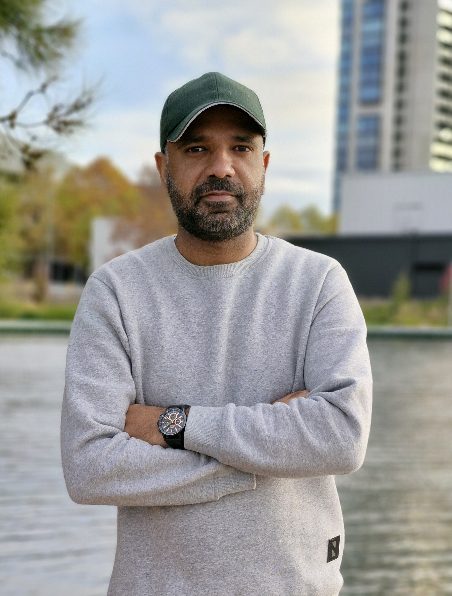

Physiological Signal Processing
Filtering, denoising, artefact detection, segmentation, feature extraction, spectral and time-frequency analysis, and signal quality assessment across wearable and biomedical signals.
Biomedical Signal Processing | Physiological AI | Embedded DSP
Biomedical Time-Series Analysis | Real-Time Signal Processing | Physiological AI
University of Canberra, Australia
I am a biomedical signal processing researcher and engineer with more than ten years of experience analysing physiological time-series data and developing machine learning and real-time embedded systems. My work spans wearable biosignals, including PPG/BVP, ECG, PCG, EMG, EEG, EDA and fNIRS, with a focus on reliable processing pipelines, lightweight AI and practical deployment.

I develop signal processing and AI methods for physiological data, from data acquisition and analysis through to embedded implementation and evaluation.
Filtering, denoising, artefact detection, segmentation, feature extraction, spectral and time-frequency analysis, and signal quality assessment across wearable and biomedical signals.
Time-series classification, CNNs, transformers, multimodal learning and model evaluation for biomedical and healthcare applications.
Deployment-aware inference and embedded signal processing using Raspberry Pi and STM32H7, including I2S acquisition, ADC/DAC interfacing, testing and verification.
Research, engineering and teaching experience across biomedical AI, embedded systems and signal processing.
Developing real-time DSP algorithms and embedded audio processing on STM32H7, including acquisition, filtering, system integration, testing and verification.
Developed wearable biosignal processing pipelines and lightweight AI models for pain assessment, and built a Raspberry Pi system for live signal processing and inference. Research includes participant-based data collection and subject-level model evaluation.
Teach and support laboratory learning in computer engineering, software development, cloud and mobile technologies, web programming, and AR/VR-based data analysis.
Delivered and supervised practical work in digital signal processing, embedded systems, microcontrollers, FPGA design, communications and computer architecture.
University of Canberra, Australia | 2023–2026
Thesis: Embedded System Design for Pain Detection and Classification. Australian Government Research Training Program Scholarship.
COMSATS University Islamabad, Pakistan | 2017–2019
Thesis on automatic cardiac disorder diagnosis from pulse plethysmograph signals. CGPA: 3.68/4.00.
International Islamic University Islamabad, Pakistan | 2008–2012
Merit scholarship recipient from the third to eighth semester.
Research metrics reported in my CV. These figures can change over time.
Publications
Citations
h-index
i10-index